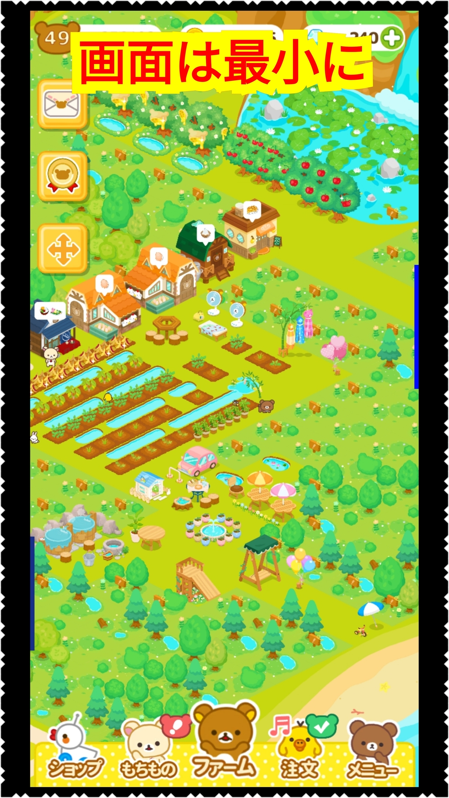
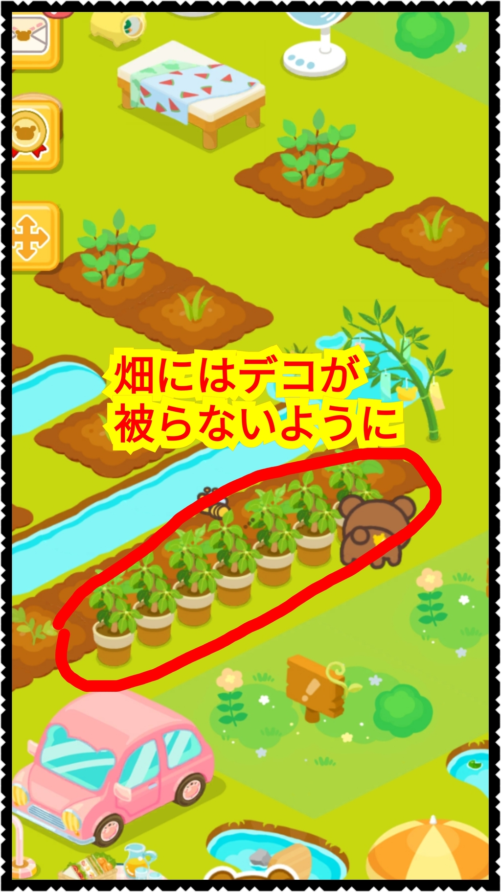
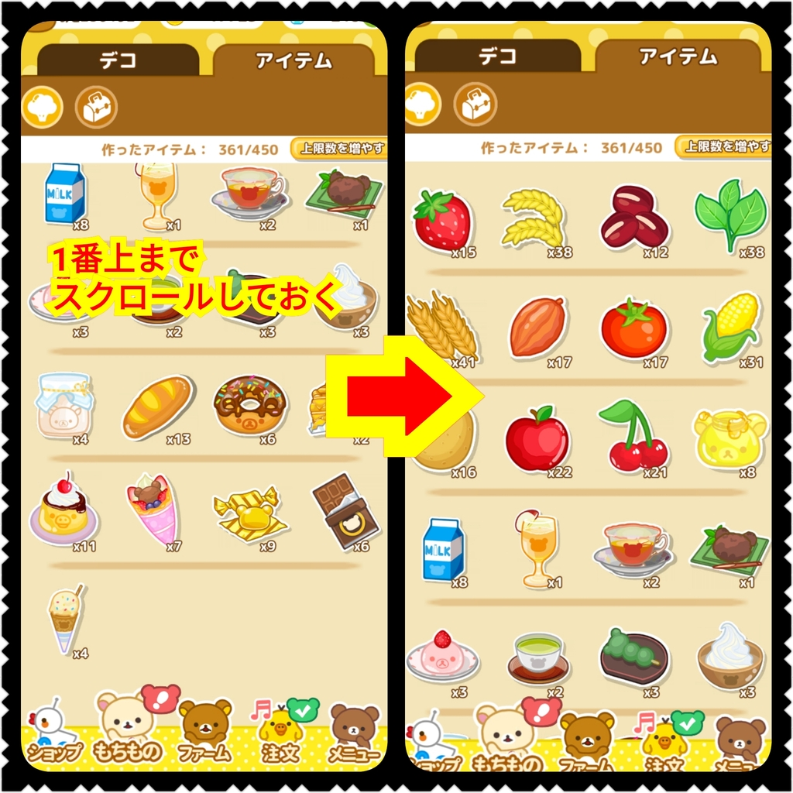
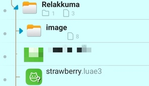

リラックマ農園のスクリプト
いちご自動栽培収穫スクリプト
空いている畑にいちごを植えて実になったら収穫し「もちもの」画面から売却するという、一連の動作を繰り返すスクリプトです。
- 本スクリプトはAnkulua上で動作するスクリプトです。
- Android専用です、AnkuluaがそもそもAndroid用のためです。
- 開発環境で試したところ、レベル47で畑の数は45個、時給は約1000コインでした。
使い方
いくつか実行前に注意しておくことがありますが、基本的には実行したら放置しておくだけです。
- 画面は最小まで小さくして下さい。また、何も植えていない状態にしておいて下さい。

- 見えている範囲の畑しか認識できません、つまり画面外の畑にはいちごを植えることはできません。また、デコなどが畑のすぐそばにあると畑を画像認識できないので、畑のそばには何も置かないようにして下さい。

- リラックマやその他の登場人物などが畑の上を歩いているときは畑を認識できずにいちごを植えないことがあります。
- 「もちもの」画面は一番上まで戻しておいて下さい。「もちもの」画面を開いて一番左上にいちごが表示されることを前提にスクリプトは動作します。

お試し版
開発に使った機種と異なる画面解像度の機種でも、解像度の比率を調整して画像認識が適切に動作する機能がAnkuluaにあるそうです。しかしながら、開発した機種以外での動作確認は一切できておらず、動作するかどうか分かりません。
そこで、興味を持っていただいた方は、無料でスクリプトの『お試し版』セットをお渡しいたしますので、試してみて下さい。動作しない場合は、ご都合よろしければ、動作するよう調整する作業にお付き合い頂ければ、と思いますので、ご協力して頂けますと幸いです。
『お試し版』をためして見たい方は以下のリンクから、strawberry.lua3とimage.zipをダウンロードして下さい。
image.zipは解凍するといくつかの画像ファイルを含んだimageフォルダになります。
どこに置いても構いませんが、必ずstrawberru.lua3とimageフォルダを同一階層に置いて下さい。
あとはankuluaでstrawberry.lua3を読み込んで実行するだけです。

動作している様子
スクリプトを使用して、自動いちご植え→刈り→販売をしている様子です。1分間くらいの動画です。
お問い合わせ先はこちら
メールアドレスは以下です。
ドットを"."に、アットを"@"に置き換えて下さい。48時間以内に返答致します。
rktnドットbooアットgmail.com